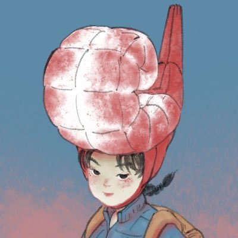
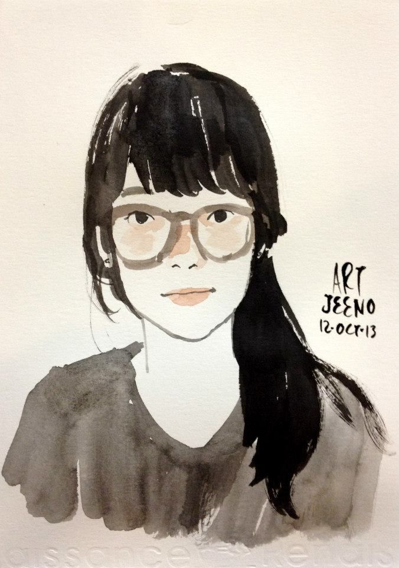
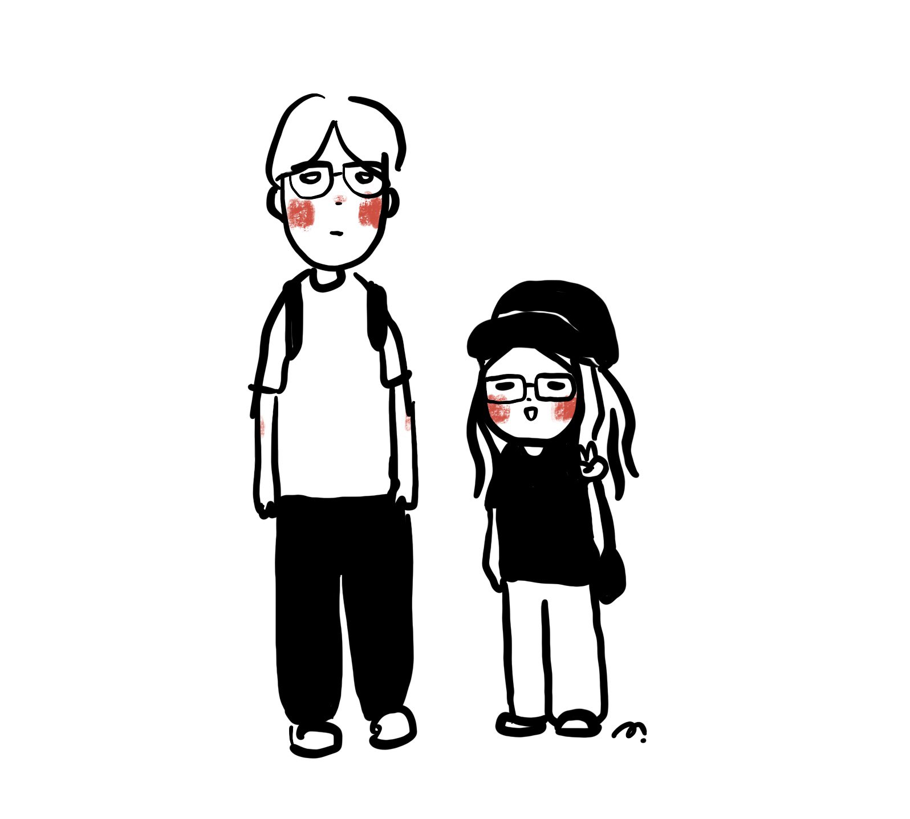
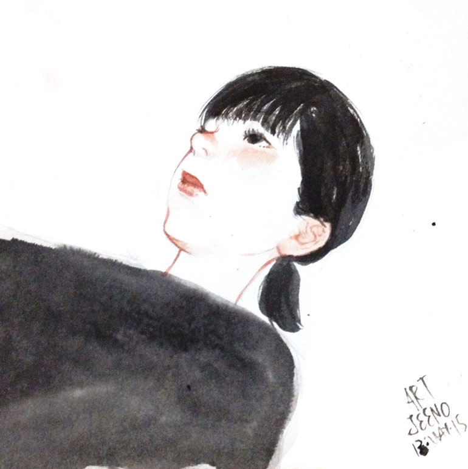

ArtJeeno
“Art Jeeno” é um jovem mangaká e ídolo de muitos adolescentes que sonham em se tornar um mangaká. Ele se formou na Faculdade de Belas Artes da Universidade de Chiang Mai, onde é um artista de mangá com linhas de desenho únicas e cores excepcionais, onde ganhou o prêmio “7º Prêmio Internacional de Mangá” do Japão. Atualmente, ele é cartunista freelancer, não vinculado a nenhuma editora. Ele iniciou esse caminho com curiosidade.
Confira algumas artes:



